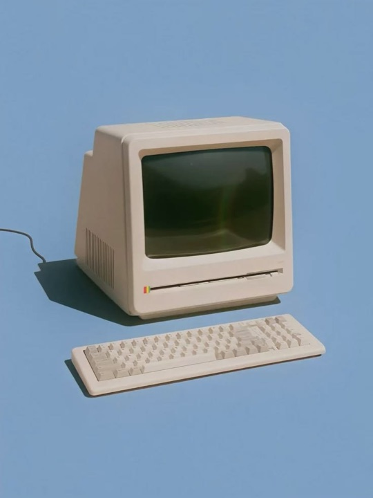

Servidor MCP para Claude Code
Convierte cualquier imagen en una ilustración isométrica
Pásale a Claude una foto, un boceto o una descripción. CSSketch le da el prompt y la geometría de tres ejes, y devuelve un HTML y SVG editable: cada color, grosor y capa se ajusta con controles.
Sin API key · Sin cuenta · El servidor no guarda tus imágenes

01 EntradaFoto
02 SalidaHTML + SVG
03 EjemploLupa
La referencia no tiene que ser isométrica. Claude identifica los objetos, los reconstruye como sólidos en tres ejes y conserva proporciones, paleta y orden de capas.
Foto → isométrico en una sola llamada.
01Cómo funciona
Tres pasos dentro de Claude Code
Sin compilar nada: un comando, una imagen o una descripción, y la validación ocurre en el mismo chat.
01
Instala el servidor
Un comando agrega CSSketch como servidor MCP HTTP.
02
Pide la ilustración
Adjunta una imagen o describe la escena: “una taza de café y un teléfono, line-art monocromo”.
03
Claude dibuja y valida
Claude escribe el HTML con el prompt del servidor, lo valida contra el canon isométrico y te da un enlace para editarlo.
02Instalación
Agrégalo a Claude Code en un comando
Un comando para Claude Code. Para otros clientes MCP, usa la configuración de abajo.
Ejecuta esto en tu terminal:
claude mcp add --transport http cssketch https://cssketch.netlify.app/mcp¿Usas otro cliente MCP? Agrega esta configuración:
{
"mcpServers": {
"cssketch": {
"type": "http",
"url": "https://cssketch.netlify.app/mcp"
}
}
}Herramientas que expone el servidor:
| Herramienta | Qué hace |
|---|---|
cssketch_prompt | Prompt isométrico a partir de descripciones de texto. |
cssketch_start | Prompt + imágenes (base64) para que Claude dibuje. |
cssketch_validate | Valida el HTML y devuelve el enlace para editarlo. |
Para verificar: pide en Claude “lista las herramientas de cssketch”.
03Preguntas
Lo que conviene saber antes de instalarlo
¿Necesito una API key de IA?
No. El servidor solo prepara el prompt, las imágenes y la validación. Quien dibuja es el cliente que lo llama, por ejemplo Claude Code.
¿Mis imágenes se guardan?
No. El servidor es stateless: no guarda imágenes ni HTML. Las imágenes viajan solo en la llamada a la herramienta.
¿La referencia tiene que ser isométrica?
No. Una foto, un boceto o una vista frontal sirven. Claude reconstruye los objetos en el canon isométrico y conserva proporciones y paleta.
¿Qué formato entrega?
Un único documento HTML con un bloque de estilos y un SVG inline. Las variables de color, grosor y estilo quedan expuestas para editarlas sin tocar el código.
¿Qué hace el validador?
Revisa que la geometría esté en la cuadrícula de 30°, que el orden de capas sea coherente y que no haya dependencias externas. Si algo falla, te dice qué arista o capa corregir.